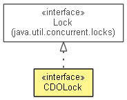

org.eclipse.emf.cdo
Interface CDOLock
- All Superinterfaces:
- Lock
- public interface CDOLock
- extends Lock

A read or write lock on an object as returned by CDOObject.cdoReadLock() or
CDOObject.cdoWriteLock().
- Since:
- 2.0
- No Implement
- This interface is not intended to be implemented by clients.
- No Extend
- This interface is not intended to be extended by clients.
WAIT
static final int WAIT
- See Also:
- Constant Field Values
NO_WAIT
static final int NO_WAIT
- See Also:
- Constant Field Values
getType
IRWLockManager.LockType getType()
- Since:
- 3.0
lock
void lock(long time,
TimeUnit unit)
throws TimeoutException
- Throws:
TimeoutException- Since:
- 4.0
lock
void lock(long millis)
throws TimeoutException
- Throws:
TimeoutException- Since:
- 4.0
tryLock
boolean tryLock(long millis)
throws InterruptedException
- Throws:
InterruptedException- Since:
- 4.0
isLocked
boolean isLocked()
- Returns
true if this lock is currently held by the requesting view, false
otherwise.
isLockedByOthers
boolean isLockedByOthers()
- Returns
true if this lock is currently held by another view (i.e. any view different
from the requesting one), false otherwise.
Copyright (c) 2011, 2012 Eike Stepper (Berlin, Germany) and others.